对比Ruby和Python的垃圾回收（2）：代式垃圾回收机制
上周，我根据之前在RuPy上做的一个名为“Visualizing Garbage Collection in Ruby and Python.”的报告写了这篇文章的上半部分。在上篇中，我解释了标准Ruby(也被称为Matz的Ruby解释器或是MRI)是如何使用名为标记回收(Mark and Sweep)的垃圾回收算法，这个算法是为1960年原版本的Lisp所开发。同样，我也介绍了Python使用一种有53年历史的GC算法，这种算法的思路非常不同，称之为引用计数。
事实证明，Python在引用计数之外，还用了另一个名为Generational Garbage Collection的算法。这意味着Python的垃圾回收器用不同的方式对待新创建的以及旧有的对象。并且在即将到来的2.1版本的MRI Ruby中也首次引入了Generational Garbage Collection 的垃圾回收机制(在另两个Ruby的实现：JRuby和Rubinius中，已经使用这种GC机制很多年了，我将在下周的RubyConf大会上将它是如何在这两种Ruby实现中工作的)。
当然，这句话“用不同的方式对待新创建的以及旧有的对象”是有点模糊不清，比如如何定义新、旧对象？又比如对于Ruby和Python来说具体是如何采取不同的对待方式？今天，我们就来谈谈这两种语言GC机制的运行原理，回答上边那些疑问。但是在我们开始谈论Generational GC之前，我们先要花点时间谈论下Python的引用计数算法的一个严重的理论问题。
Python中的循环数据结构以及引用计数
通过上篇，我们知道在Python中，每个对象都保存了一个称为引用计数的整数值，来追踪到底有多少引用指向了这个对象。无论何时，如果我们程序中的一个变量或其他对象引用了目标对象，Python将会增加这个计数值，而当程序停止使用这个对象，则Python会减少这个计数值。一旦计数值被减到零，Python将会释放这个对象以及回收相关内存空间。
从六十年代开始，计算机科学界就面临了一个严重的理论问题，那就是针对引用计数这种算法来说，如果一个数据结构引用了它自身，即如果这个数据结构是一个循环数据结构，那么某些引用计数值是肯定无法变成零的。为了更好地理解这个问题，让我们举个例子。下面的代码展示了一些上周我们所用到的节点类：
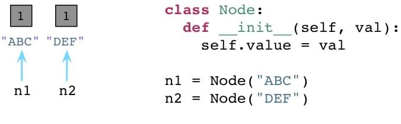
我们有一个构造器(在Python中叫做 init )，在一个实例变量中存储一个单独的属性。在类定义之后我们创建两个节点，ABC以及DEF，在图中为左边的矩形框。两个节点的引用计数都被初始化为1，因为各有两个引用指向各个节点(n1和n2)。
现在，让我们在节点中定义两个附加的属性，next以及prev：
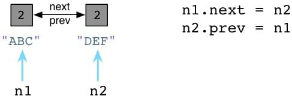
跟Ruby不同的是，Python中你可以在代码运行的时候动态定义实例变量或对象属性。这看起来似乎有点像Ruby缺失了某些有趣的魔法。(声明下我不是一个Python程序员，所以可能会存在一些命名方面的错误)。我们设置 n1.next 指向 n2，同时设置 n2.prev 指回 n1。现在，我们的两个节点使用循环引用的方式构成了一个双端链表。同时请注意到 ABC 以及 DEF 的引用计数值已经增加到了2。这里有两个指针指向了每个节点：首先是 n1 以及 n2，其次就是 next 以及 prev。
现在，假定我们的程序不再使用这两个节点了，我们将 n1 和 n2 都设置为null(Python中是None)。
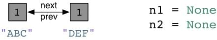
好了，Python会像往常一样将每个节点的引用计数减少到1。
在Python中的零代(Generation Zero)
请注意在以上刚刚说到的例子中，我们以一个不是很常见的情况结尾：我们有一个“孤岛”或是一组未使用的、互相指向的对象，但是谁都没有外部引用。换句话说，我们的程序不再使用这些节点对象了，所以我们希望Python的垃圾回收机制能够足够智能去释放这些对象并回收它们占用的内存空间。但是这不可能，因为所有的引用计数都是1而不是0。Python的引用计数算法不能够处理互相指向自己的对象。
当然，上边举的是一个故意设计的例子，但是你的代码也许会在不经意间包含循环引用并且你并未意识到。事实上，当你的Python程序运行的时候它将会建立一定数量的“浮点数垃圾”，Python的GC不能够处理未使用的对象因为应用计数值不会到零。
这就是为什么Python要引入Generational GC算法的原因！正如Ruby使用一个链表(free list)来持续追踪未使用的、自由的对象一样，Python使用一种不同的链表来持续追踪活跃的对象。而不将其称之为“活跃列表”，Python的内部C代码将其称为零代(Generation Zero)。每次当你创建一个对象或其他什么值的时候，Python会将其加入零代链表：
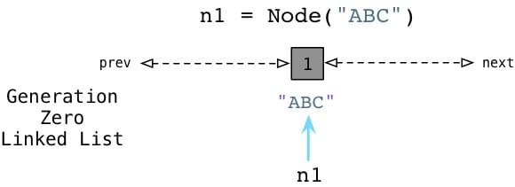
从上边可以看到当我们创建ABC节点的时候，Python将其加入零代链表。请注意到这并不是一个真正的列表，并不能直接在你的代码中访问，事实上这个链表是一个完全内部的Python运行时。
相似的，当我们创建DEF节点的时候，Python将其加入同样的链表：
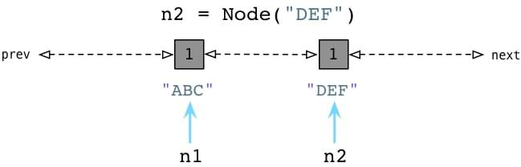
现在零代包含了两个节点对象。(他还将包含Python创建的每个其他值，与一些Python自己使用的内部值。)
检测循环引用
随后，Python会循环遍历零代列表上的每个对象，检查列表中每个互相引用的对象，根据规则减掉其引用计数。在这个过程中，Python会一个接一个的统计内部引用的数量以防过早地释放对象。
为了便于理解，来看一个例子：
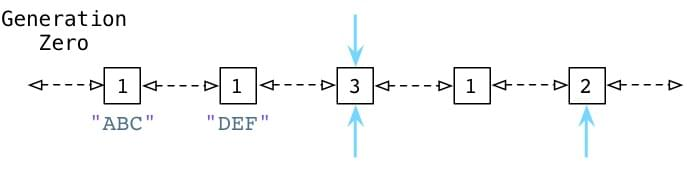
从上面可以看到 ABC 和 DEF 节点包含的引用数为1.有三个其他的对象同时存在于零代链表中，蓝色的箭头指示了有一些对象正在被零代链表之外的其他对象所引用。(接下来我们会看到，Python中同时存在另外两个分别被称为一代和二代的链表)。这些对象有着更高的引用计数因为它们正在被其他指针所指向着。
接下来你会看到Python的GC是如何处理零代链表的。
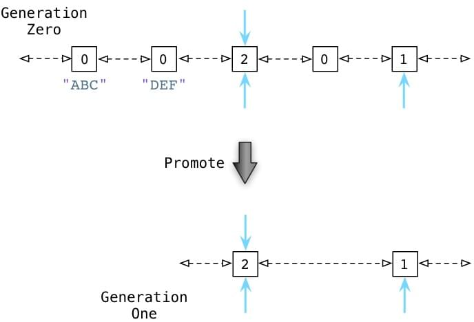
通过识别内部引用，Python能够减少许多零代链表对象的引用计数。在上图的第一行中你能够看见ABC和DEF的引用计数已经变为零了，这意味着收集器可以释放它们并回收内存空间了。剩下的活跃的对象则被移动到一个新的链表：一代链表。
从某种意义上说，Python的GC算法类似于Ruby所用的标记回收算法。周期性地从一个对象到另一个对象追踪引用以确定对象是否还是活跃的，正在被程序所使用的，这正类似于Ruby的标记过程。
Python中的GC阈值
Python什么时候会进行这个标记过程？随着你的程序运行，Python解释器保持对新创建的对象，以及因为引用计数为零而被释放掉的对象的追踪。从理论上说，这两个值应该保持一致，因为程序新建的每个对象都应该最终被释放掉。
当然，事实并非如此。因为循环引用的原因，并且因为你的程序使用了一些比其他对象存在时间更长的对象，从而被分配对象的计数值与被释放对象的计数值之间的差异在逐渐增长。一旦这个差异累计超过某个阈值，则Python的收集机制就启动了，并且触发上边所说到的零代算法，释放“浮动的垃圾”，并且将剩下的对象移动到一代列表。
随着时间的推移，程序所使用的对象逐渐从零代列表移动到一代列表。而Python对于一代列表中对象的处理遵循同样的方法，一旦被分配计数值与被释放计数值累计到达一定阈值，Python会将剩下的活跃对象移动到二代列表。
通过这种方法，你的代码所长期使用的对象，那些你的代码持续访问的活跃对象，会从零代链表转移到一代再转移到二代。通过不同的阈值设置，Python可以在不同的时间间隔处理这些对象。Python处理零代最为频繁，其次是一代然后才是二代。
弱代假说
来看看代垃圾回收算法的核心行为：垃圾回收器会更频繁的处理新对象。一个新的对象即是你的程序刚刚创建的，而一个来的对象则是经过了几个时间周期之后仍然存在的对象。Python会在当一个对象从零代移动到一代，或是从一代移动到二代的过程中提升(promote)这个对象。
为什么要这么做？这种算法的根源来自于弱代假说(weak generational hypothesis)。这个假说由两个观点构成：首先是年亲的对象通常死得也快，而老对象则很有可能存活更长的时间。
假定现在我用Python或是Ruby创建一个新对象：
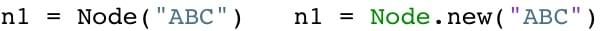
根据假说，我的代码很可能仅仅会使用ABC很短的时间。这个对象也许仅仅只是一个方法中的中间结果，并且随着方法的返回这个对象就将变成垃圾了。大部分的新对象都是如此般地很快变成垃圾。然而，偶尔程序会创建一些很重要的，存活时间比较长的对象-例如web应用中的session变量或是配置项。
通过频繁的处理零代链表中的新对象，Python的垃圾收集器将把时间花在更有意义的地方：它处理那些很快就可能变成垃圾的新对象。同时只在很少的时候，当满足阈值的条件，收集器才回去处理那些老变量。
回到Ruby的自由链
即将到来的Ruby 2.1版本将会首次使用基于代的垃圾回收算法！(请注意的是，其他的Ruby实现，例如JRuby和Rubinius已经使用这个算法许多年了)。让我们回到上篇博文中提到的自由链的图来看看它到底是怎么工作的。
请回忆当自由链使用完之后，Ruby会标记你的程序仍然在使用的对象。
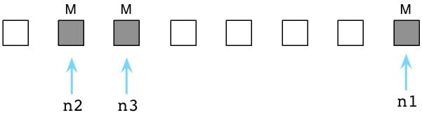
从这张图上我们可以看到有三个活跃的对象，因为指针n1、n2、n3仍然指向着它们。剩下的用白色矩形表示的对象即是垃圾。(当然，实际情况会复杂得多，自由链可能会包含上千个对象，并且有复杂的引用指向关系，这里的简图只是帮助我们了解Ruby的GC机制背后的简单原理，而不会将我们陷入细节之中)
同样，我们说过Ruby会将垃圾对象移动回自由链中，这样的话它们就能在程序申请新对象的时候被循环使用了。
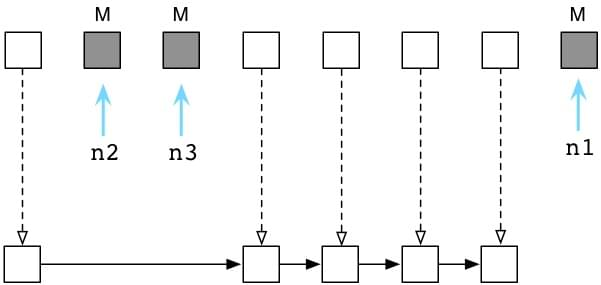
Ruby2.1基于代的GC机制
从2.1版本开始，Ruby的GC代码增加了一些附加步骤：它将留下来的活跃对象晋升(promote)到成熟代(mature generation)中。(在MRI的C源码中使用了old这个词而不是mature)，接下来的图展示了两个Ruby2.1对象代的概念图：
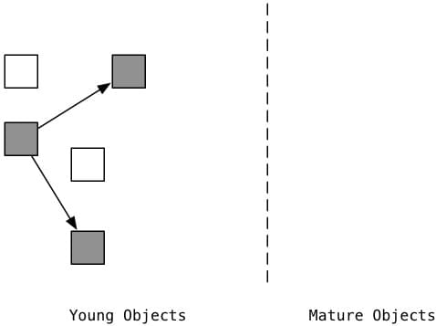
在左边是一个跟自由链不相同的场景，我们可以看到垃圾对象是用白色表示的，剩下的是灰色的活跃对象。灰色的对象刚刚被标记。
一旦“标记清除”过程结束，Ruby2.1将剩下的标记对象移动到成熟区：
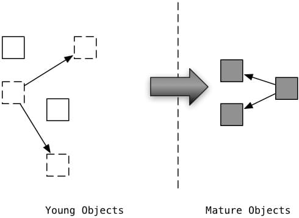
跟Python中使用三代来划分不同，Ruby2.1只用了两代，左边是年轻的新一代对象，而右边是成熟代的老对象。一旦Ruby2.1标记了对象一次，它就会被认为是成熟的。Ruby会打赌剩下的活跃对象在相当长的一段时间内不会很快变成垃圾对象。
重要提醒：Ruby2.1并不会真的在内存中拷贝对象，这些代表不同代的区域并不是由不同的物理内存区域构成。(有一些别的编程语言的GC实现或是Ruby的其他实现，可能会在对象晋升的时候采取拷贝的操作)。Ruby2.1的内部实现不会将在标记&清除过程中预先标记的对象包含在内。一旦一个对象已经被标记过一次了，那么那将不会被包含在接下来的标记清除过程中。
现在，假定你的Ruby程序接着运行着，创造了更多新的，更年轻的对象。则GC的过程将会在新的一代中出现，如图：
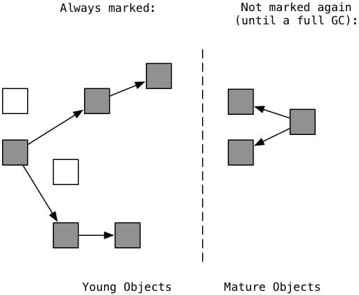
如同Python那样，Ruby的垃圾收集器将大部分精力都放在新一代的对象之上。它仅仅会将自上一次GC过程发生后创建的新的、年轻的对象包含在接下来的标记清除过程中。这是因为很多新对象很可能马上就会变成垃圾(白色标记)。Ruby不会重复标记右边的成熟对象。因为他们已经在一次GC过程中存活下来了，在相当长的一段时间内不会很快变成垃圾。因为只需要标记新对象，所以Ruby 的GC能够运行得更快。它完全跳过了成熟对象，减少了代码等待GC完成的时间。
偶然的Ruby会运行一次“全局回收”，重标记(re-marking)并重清除(re-sweeping)，这次包括所有的成熟对象。Ruby通过监控成熟对象的数目来确定何时运行全局回收。当成熟对象的数目双倍于上次全局回收的数目时，Ruby会清理所有的标记并且将所有的对象都视为新对象。
白障
这个算法的一个重要挑战是值得深入解释的：假定你的代码创建了一个新的年轻的对象，并且将其作为一个已存在的成熟对象的子嗣加入。举个例子，这种情况将会发生在，当你往一个已经存在了很长时间的数组中增加了一个新值的时候：
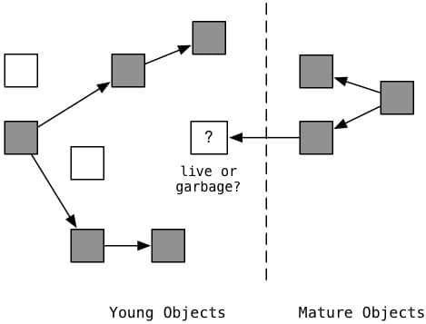
让我们来看看图，左边的是新对象，而成熟的对象在右边。在左边标记过程已经识别出了5个新的对象目前仍然是活跃的(灰色)。但有两个对象已经变成垃圾了(白色)。但是如何处理正中间这个新建对象？这是刚刚那个问题提到的对象，它是垃圾还是活跃对象呢？
当然它是活跃对象了，因为有一个从右边成熟对象的引用指向它。但是我们前面说过已经被标记的成熟对象是不会被包含在标记清除过程中的(一直到全局回收)。这意味着类似这种的新建对象会被错误的认为是垃圾而被释放，从而造成数据丢失。
Ruby2.1 通过监视成熟对象，观察你的代码是否会添加一个从它们到新建对象的引用来克服这个问题。Ruby2.1 使用了一个名为白障(white barriers)的老式GC技术来监视成熟对象的变化 – 无论任意时刻当你添加了从一个对象指向另一个对象的引用时(无论是新建或是修改一个对象)，白障就会被触发。白障将会检测是否源对象是一个成熟对象，如果是的话则将这个成熟对象添加到一个特殊的列表中。随后，Ruby2.1会将这些满足条件的成熟对象包括到下一次标记清除的范围内，以防止新建对象被错误的标记为垃圾而清除。
Ruby2.1 的白障实现相当复杂，主要是因为已有的C扩展并未包含这部分功能。Koichi Sasada以及Ruby的核心团队使用了一个比较巧妙的方案来解决这个问题。如果想了解更多的内容，请阅读这些相关材料：Koichi在 EuRuKo 2013 上的演讲 Koichi’s fascinating presentation。
站在巨人的肩膀上
乍眼一看，Ruby和Python的GC实现是截然不同的，Ruby使用John MaCarthy的原生“标记并清除”算法，而Python使用引用计数。但是仔细看来，可以发现Python使用了些许标记清除的思想来处理循环引用，而两者同时以相似的方式使用基于代的垃圾回收算法。Python划分了三代，而Ruby只有两代。
这种相似性应该不会让人感到意外。两种编程语言都使用了几十年前的计算机科学研究成果来进行设计，这些成果早在语言成型之前就已经被做出来了。我比较惊异的是当你掀开不同编程语言的表面而深入底层，你总能够发现一些相似的基础理念和算法。现代编程语言应该感激那些六七十年代由麦卡锡等计算机先贤所作出的计算机科学开创性研究。
原文：Pat Shaughnessy Generational GC in Python and Ruby
译文：http://blog.jobbole.com/73300/
对比Ruby和Python的垃圾回收（2）：代式垃圾回收机制
http://whypro.github.io/hexo-blog/2015/04/20/对比Ruby和Python的垃圾回收（2）：代式垃圾回收机制/